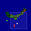
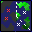
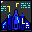

Star Fighter 3000 Pilot's Manual
Contents / Previous
Chapter / Next Chapter
The detail map (large) displays the complete combat area in
varying detail and scale, showing all ships' locations, type and
status. All ground objects are shown, including mission targets. To
scroll the map use the cursor keys, or move the cursor to the edge
and click the mouse. Selecting an area in the global map (small)
will also move the detail map to that area.
To control the map cursor, use the mouse or alternatively the
current flight controls (either keys or joystick, if
configured).
- SMALL MAP
- 
The global map (small) shows airborne spacecraft and ground targets
only. Red, green & white crosses indicate enemy ships, friendly
ships and the player's ship respectively. Selecting here will
scroll the detailed map view.
- ZOOM ICONS
-
Scales the current map view.
- RADAR ICON
- 
Toggles drawing of ground objects on the map.
- BRIEF ICON
-
Brings up a text brief outlining the general details of the mission
and combat statistics. To close the mission brief, de-select this
icon.
- VIEW ICON
-
Allows a detailed ground view of any ground targets from a local
position. If a camera view is available from a given current map
location then the cursor will change to a [View Target]
prompt.
- STATUS ICON
- 
Displays current ship setup, and allows player to purchase
equipment (only on mission start or when docked in mothership).
Note: This is NOT available during special ship setup missions (ie.
prototype combat craft etc.)
- Fighter Spacecraft
- These flash between their I-D Code and their current direction.
The 1st letter indicates type:
The 2nd indicates status:
|
Attacking |
|
Patrolling flightpath |
|
Flying in formation |
- Large Spacecraft
- These flash a large '' symbol, and their current
direction. This applies to all large craft except Fednet
motherships which show up as an ''.
- Airborne Targets
- Aircraft with a special mission significance show their status
instead of a direction:
- A Cross indicates that the ship has to be destroyed (or be
destroyed prior to it reaching its destination).
- A Heart indicates that the ship must survive (or be safely
escorted to its destination).
- Airborne Weapons
- Any item classified as a weapon will be displayed as a red
missile () + direction.
- Direction indicators
- Most items displayed on the radar screen will display a current
direction. The colour of this arrow indicates its type:
| GREEN |
|
- Friendly ships. |
| RED |
|
- Enemy ships. |
| WHITE |
|
- The player's ship. |
- Ground Mission Targets
- Targets which must be destroyed to complete a mission are shown
by a small flashing ''.
- Information points
- Indicated by a flashing ''. Clicking on one of these will
give a detailed briefing on a particular location or target area.
(Only in zoom X1). To close the location briefing, de-select the
main briefing icon.
Contents /
Previous Chapter / Next Chapter